This function calculates adjusted predictions for each row of the dataset.
The datagrid() function and the newdata argument can be used to
calculate Average Adjusted Predictions (AAP), Average Prediction at the Mean
(APM), or Predictions at User-Specified Values of the regressors. See below
for details and examples.
predictions(
model,
variables = NULL,
newdata = NULL,
conf.level = 0.95,
type = "response",
...
)Model object
Character vector. Compute Adjusted Predictions for
combinations of each of these variables. Factor levels are considered at
each of their levels. Numeric variables variables are considered at Tukey's
Five-Number Summaries. NULL uses the original data used to fit the model.
A dataset over which to compute adjusted predictions. NULL uses
the original data used to fit the model.
The confidence level to use for the confidence interval.
No interval is computed if conf.int=NULL. Must be strictly greater than 0
and less than 1. Defaults to 0.95, which corresponds to a 95 percent
confidence interval.
Type(s) of prediction as string or vector This can differ based on the model type, but will typically be a string such as: "response", "link", "probs", or "zero".
Additional arguments are pushed forward to predict().
A data.frame with one row per observation and several columns:
rowid: row number of the newdata data frame
type: prediction type, as defined by the type argument
group: (optional) value of the grouped outcome (e.g., categorical outcome models)
predicted: predicted outcome
std.error: standard errors computed by the insight::get_predicted function or, if unavailable, via marginaleffects delta method functionality.
conf.low: lower bound of the confidence or highest density interval (for bayesian models)
conf.high: upper bound of the confidence or highest density interval (for bayesian models)
An "ajusted prediction" is the outcome predicted by a model for some combination of the regressors’ values, such as their means or factor levels (a.k.a. “reference grid”). When possible, this function uses the delta method to compute the standard error associated with the adjusted predictions.
A detailed vignette on adjusted predictions and a list of supported models are published on the package website:
https://vincentarelbundock.github.io/marginaleffects/ Compute model-adjusted predictions (fitted values) for a "grid" of regressor values.
# Adjusted Prediction for every row of the original dataset
mod <- lm(mpg ~ hp + factor(cyl), data = mtcars)
pred <- predictions(mod)
head(pred)
#> type predicted std.error conf.low conf.high mpg hp cyl
#> 1 response 20.03819 1.2041405 17.57162 22.50476 21.0 110 6
#> 2 response 20.03819 1.2041405 17.57162 22.50476 21.0 110 6
#> 3 response 26.41451 0.9619738 24.44399 28.38502 22.8 93 4
#> 4 response 20.03819 1.2041405 17.57162 22.50476 21.4 110 6
#> 5 response 15.92247 0.9924560 13.88952 17.95543 18.7 175 8
#> 6 response 20.15839 1.2186288 17.66214 22.65463 18.1 105 6
# Adjusted Predictions at User-Specified Values of the Regressors
predictions(mod, newdata = datagrid(hp = c(100, 120), cyl = 4))
#> type predicted std.error conf.low conf.high hp cyl
#> 1 response 26.24623 0.9856325 24.22726 28.26521 100 4
#> 2 response 25.76546 1.1096486 23.49245 28.03847 120 4
# Average Adjusted Predictions (AAP)
library(dplyr)
#>
#> Attaching package: ‘dplyr’
#> The following objects are masked from ‘package:stats’:
#>
#> filter, lag
#> The following objects are masked from ‘package:base’:
#>
#> intersect, setdiff, setequal, union
mod <- lm(mpg ~ hp * am * vs, mtcars)
pred <- predictions(mod, newdata = datagrid(am = 0, grid.type = "counterfactual")) %>%
summarize(across(c(predicted, std.error), mean))
predictions(mod, newdata = datagrid(am = 0:1, grid.type = "counterfactual")) %>%
group_by(am) %>%
summarize(across(c(predicted, std.error), mean))
#> # A tibble: 2 × 3
#> am predicted std.error
#> <int> <dbl> <dbl>
#> 1 0 18.1 1.54
#> 2 1 22.8 1.41
# Conditional Adjusted Predictions
plot_cap(mod, condition = "hp")
